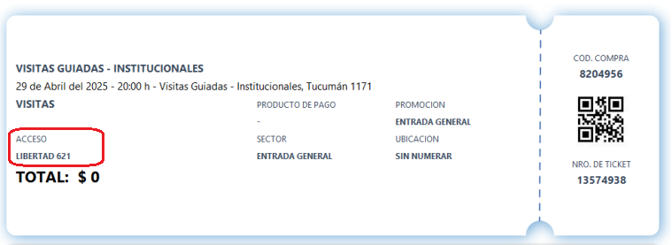
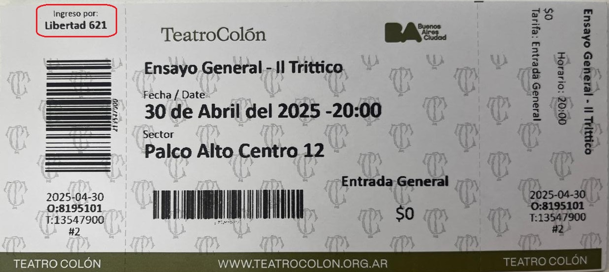
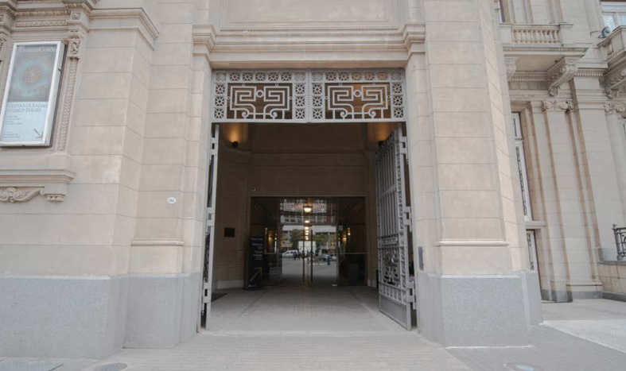
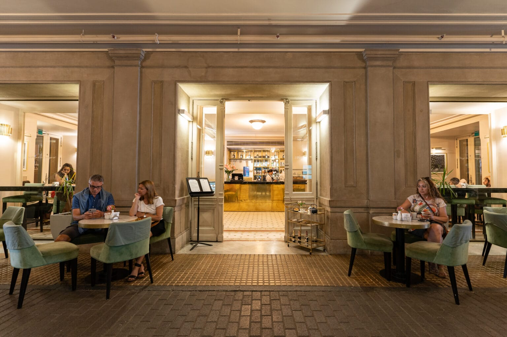
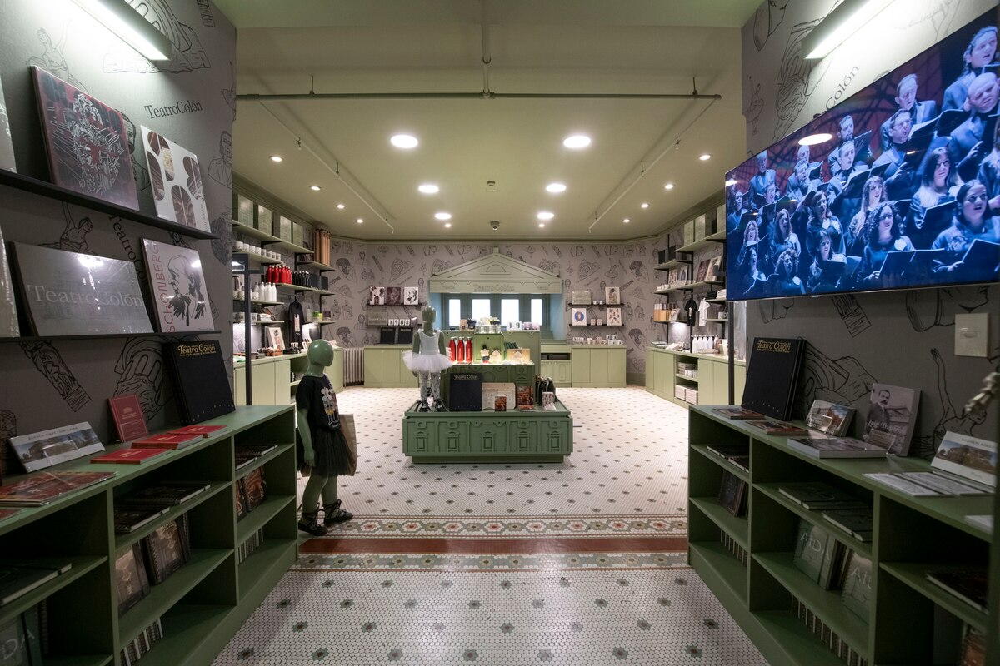
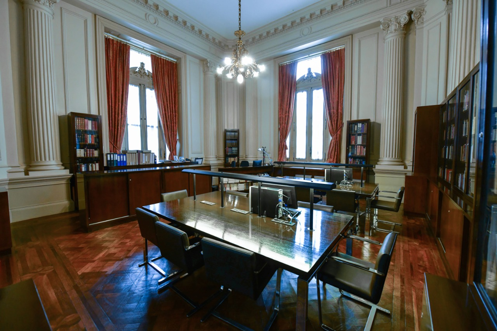

La implementación de recursos de accesibilidad en el Teatro Colón es esencial para garantizar que todas las personas, independientemente de sus capacidades, puedan disfrutar plenamente de la oferta cultural de la Ciudad. Esta iniciativa no sólo responde al cumplimiento de las normativas vigentes, sino que se sustenta en un genuino compromiso de responsabilidad social y ética
¿CÓMO LLEGO?
Dirección del Teatro
Libertad 621, entre Tucumán y Viamonte
Colectivo
Línea 5, 9, 10, 17, 26, 29, 39, 45, 59, 60, 67, 70, 91, 98, 99, 100, 109, 111, 115, 129, 132 y 140
Subte
Línea B, estación “Carlos Pellegrini”
Línea D, estación “Tribunales”
¿CÓMO Y DÓNDE COMPRO LAS ENTRADAS?
Dirección de Boletería:
Tucumán 1171
Horario:
Lunes a sábado, de 9 a 20H. Domingos y feriados, de 9 a 17H
(excepto 1 de mayo, 24, 25, 31 de diciembre y 1 de enero)
También es posible comprar las entradas en línea, en www.teatrocolon.org.ar.
Entradas gratuitas con CUD Con el objetivo de seguir contribuyendo a la participación de toda la comunidad en la agenda cultural de la Ciudad, y en cumplimiento con la Ley 3.546 (CABA), el Teatro Colón ha implementado un nuevo sistema para la entrega de entradas gratuitas a personas con CUD. Para más información, ingresar aquí.
¿CÓMO INGRESO A UNA FUNCIÓN?
El Teatro tiene distintas entradas. Cada espectador debe usar la entrada que corresponde según el tipo de ubicación que tenga. La dirección exacta aparece detallada en la entrada.
Versión impresa
Versión digital
Ingreso accesible
El ascensor del Teatro se encuentra en la entrada Tucumán, ingresando por Tucumán 1171.Libertad 621
Es la entrada principal del Teatro. Hay 10 escalones desde la vereda, luego una escalera con otros 15 escalones hasta el nivel de la Sala principal. Por aquí se ingresa a:- Platea
- Palcos bajos
- Palcos balcón
- Platea balcón
- Palcos altos
Tucumán 1135
Ingreso a niveles:- Galería
- Paraíso
Viamonte 1142
Ingreso a niveles:- Cazuela
- Tertulia
PASAJE DE LOS CARRUAJES
Dirección
Tucuman 1171 y Viamonte XXXX
Horario
Lunes a sábados de 8:30 a 20h.
Domingos y feriados, de 9 a 17h
El Pasaje de los Carruajes es una antigua calle interna, de libre ingreso y completamente accesible. Allí se centralizan todos los servicios que el Teatro ofrece al público:
- Boletería
- Visitas guiadas
- Confitería
- Tienda de recuerdos
- Biblioteca
- Baños accesibles

CONFITERÍA
Oculto en el centro del Pasaje de los Carruajes, la confitería ofrece una amplia carta en una atmósfera especialmente mágica. Se ingresa por las calles Viamonte o Tucumán y es accesible con sillas de ruedas.

TIENDA DE RECUERDOS
En la tienda, vas a encontrar una colección de objetos que recrean la estética de las distintas disciplinas y espacios del Teatro. Está ubicada a la izquierda de la confitería y es accesible con sillas de ruedas.

BIBLIOTECA
La Biblioteca del Colón custodia un acervo documental de unos 30 mil volúmenes cuya riqueza, calidad y diversidad abarca la música, la danza, la lírica y la propia historia del Teatro.
Dirección: Libertad 637. Hay que subir 10 escalones desde el nivel de la vereda.
Horario: de lunes a viernes de 10 a 17h. Antes de cada función en días de semana, la Biblioteca abrirá sus puertas entre las 19:15 y las 20h.

RECURSOS DE ACCESIBILIDAD
SOBRETÍTULOS
Las óperas son representadas con transcripción de los diálogos en español, ubicada en el borde superior de la embocadura del escenario.
ARO MAGNÉTICO
La sala principal del Teatro Colón cuenta con un sistema de escucha asistida donado por la Mutualidad Argentina de Hipoacúsicos. Esta tecnología, basada en la conversión de las señales sonoras en ondas magnéticas, se denomina aro magnético y posibilita la escucha de personas hipoacúsicas. Tiene cobertura en las butacas del lado derecho de la platea y los palcos más próximos. El único requisito es el uso de audífonos con bobina telefónica.
ASCENSOR
El edificio cuenta con ascensores para acceder a todos los niveles del Teatro, sin necesidad de subir escaleras. El ingreso al ascensor es por Tucumán 1171.
SILLAS DE RUEDAS
El Teatro dispone de 2 sillas de ruedas para aquellos visitantes que lo requieran. Para hacer uso de este servicio, por favor, anunciarse con el personal de Boletería, Visitas Guiadas o de Seguridad.
PERROS GUÍA
Son bienvenidos siguiendo las regulaciones que establece la Ley 26.858.
SANITARIOS ACCESIBLES
Hay sanitarios de fácil accesibilidad en todos los niveles, ubicados en los extremos de los pasillos de la Sala. También los hay en el Pasaje de los Carruajes, cerca del ingreso Viamonte.
ASISTENCIA MÉDICA
Si necesitas algún tipo de asistencia médica mientras estás en el Teatro, solicitá ayuda al personal de Sala o de Seguridad.